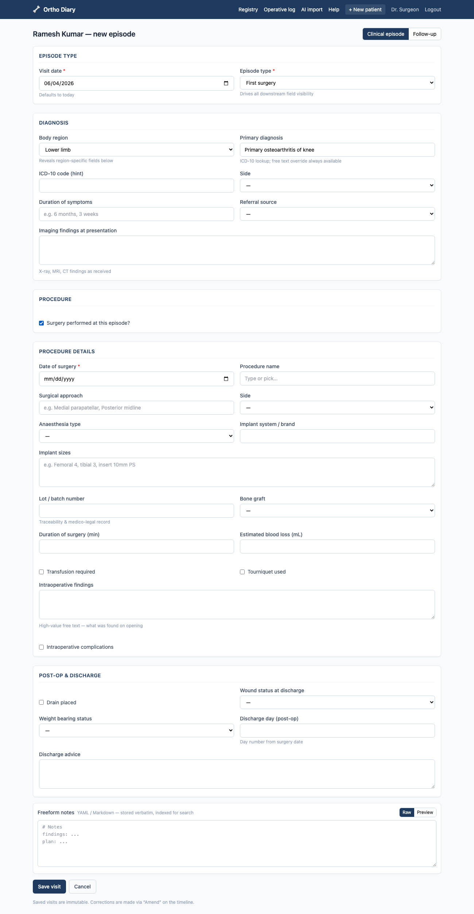
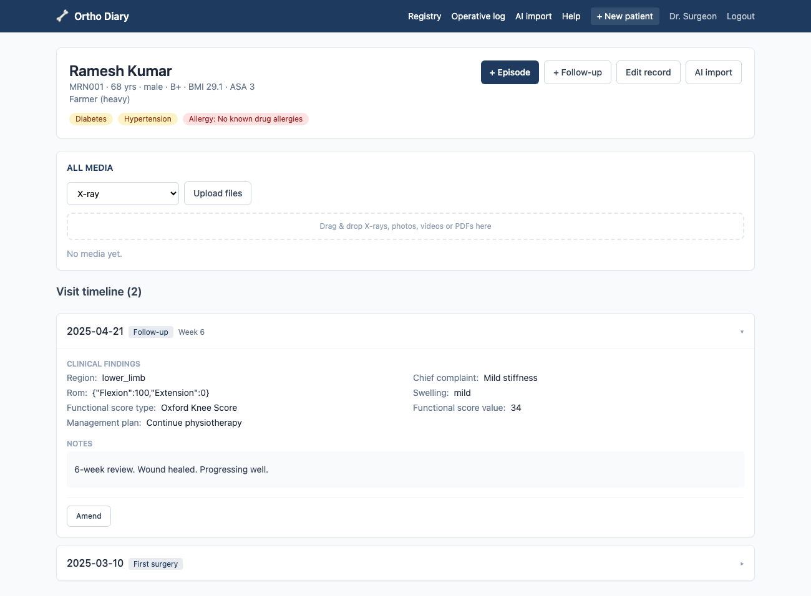
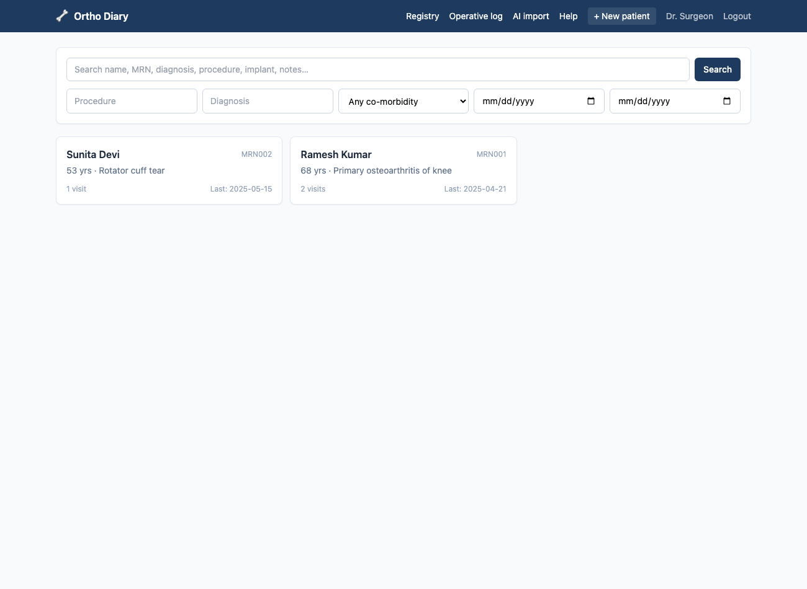

I built a medical records system with no edit button
I built a private records system for one orthopaedic surgeon — registry, clinical episode forms, operative log, media, an AI discharge importer. I expected the conditional forms to be the slog and record-editing to be trivial. It went the other way: every form collapsed into 195 lines of JSON, and editing is the thing I refused to build at all.
The brief was nine modules for a single surgeon, to be shipped as one process on one machine.The git history of this project is exactly one commit. There was no night the routes vanished; whatever drama this post has was premeditated. Before writing the first endpoint I set three constraints I wasn't going to negotiate with myself about: forms are pure data, saved visits are immutable, and the AI never writes a record a human hasn't reviewed. Each one is really an absence — a capability the system deliberately doesn't have. This is the story of what each absence bought.
The shape underneath is two halves with a thin seam: a FastAPI backend (SQLite, a storage layer standing in for Google Drive) and a React/TypeScript SPA, with the Python process serving both in production. More on that seam later — the forms come first, because the forms are where I expected the fight.
Sixty-seven fields that refuse to sit still
Clinical forms are conditional by nature. Pick "Lower limb" as the body region and a Side field should appear. Tick "Surgery performed" and an 18-field procedure section — implant brand, lot number, tourniquet time, blood loss — unfolds. The naive implementation hard-codes all of this into React components, and then every new procedure type is a frontend change, a review, a rebuild. For a system one surgeon will be extending for years, that's rot with a delivery date.
So every form in the system — the patient master record, the episode form, the follow-up
form — is declared in one file, backend/app/form_schema.json: 195 lines,
67 fields, 13 conditional rules. Visibility is a showIf predicate evaluated
against the current values by dotted path:
{ "key": "diagnosis.side", "type": "select", "optionsRef": "side",
"showIf": { "field": "diagnosis.region", "in": ["upper_limb", "lower_limb"] } }
{ "id": "procedure", "title": "Procedure details",
"showIf": { "field": "procedure.performed", "truthy": true },
"fields": [ ... 18 fields ... ] }
The backend serves this file verbatim at /api/form-schema. On the frontend,
DynamicForm.tsx walks the schema, reads and writes values by dotted path
(getPath/setPath in lib/forms.ts), and runs each
predicate through evalCondition — twelve lines of TypeScript supporting
equals, in, truthy, and the combinators
allOf / anyOf / not. That's the entire
conditional-logic engine. I kept waiting for the case it couldn't express. It hasn't
come up.

The payoff shows in the corners. Range-of-motion fields are a rom type
whose measures vary by body region, and that mapping is also just data
(romMeasures, same file).Upper limb gets internal/external rotation, lower limb gets adduction, everything else falls back to flexion/extension. The interpreter has never heard of a shoulder.
The BMI field is declared "computed": "bmi", "readonly": true and the
renderer derives it live from height and weight. Forms were where I expected to fight.
The fight I actually declined was over editing.
The endpoint that doesn't exist
Clinical records have a property most CRUD apps don't: a saved entry is a medico-legal
document. You don't edit it; you amend it, and the amendment itself is part of the
record. So the visits router simply has no PUT or PATCH.
The only way to correct a visit is:
POST /api/visits/{visit_id}/amend
{ "visit_date": "2025-01-01", "episode_type": "new",
"diagnosis": { "label": "ACL tear", "side": "right" },
"amendment_reason": "side correction" } # required
This creates a new visit row linked to the original via
amends_visit_id, with a mandatory amendment_reason. The
original row is untouched. The timeline shows both, and the chain of pointers is the
audit trail.
is_locked column, no permission check that someone could route around —
the capability to mutate a visit simply does not exist in the API surface. The test
for this (test_visit_is_immutable_and_amendable) asserts the amendment
links back to the original and that the patient still has two visits afterwards:
the original is preserved, not overwritten.

The master record is the deliberate exception — demographics and co-morbidities
can be updated via PUT /api/patients/{id}, because a patient's
contact number changing is not a clinical event. The line between mutable identity and
immutable history is drawn at the visit boundary. And if a human can't overwrite a
clinical record, a language model certainly can't.
Claude gets to read, not to write
Surgeons accumulate discharge summaries as PDFs, and retyping them is exactly the kind of work this system exists to kill. The importer turns a PDF into a pre-filled patient record — but with a hard rule inherited from the immutability principle: nothing the model extracts is ever written to a patient record directly. The extraction lands in a review form; the surgeon corrects it field by field and saves; only then does a confirm call seal the audit row.
The prompt pins Claude to an exact JSON shape — every field gets a sibling
*_confidence of high/medium/low.Yes, this is the model grading its own homework. The badges aren't a guarantee — they're a "look here first" for the surgeon's eye, which is all a review queue needs.
A mapping layer (claude_to_form) translates the flat extraction into the
same dotted paths the form engine uses (diagnosis.label,
procedure.implant_sizes), so the review UI is just DynamicForm
again with an extra prop: AI-prefilled fields get a colored confidence badge, and
low-confidence ones get a warning. One schema, one renderer, two jobs.
discharge_imports row (raw extracted text + the full Claude response) but
never touches patients or visits. Committing requires the
surgeon to save the reviewed form and then hit a separate confirm endpoint, which
stamps confirmed_at and attaches the source PDF to the patient's media
tagged "Discharge document". Every import is auditable end to end: original PDF,
raw text, model output, confirmation time.
ANTHROPIC_API_KEY configured? Text is still extracted and stored, with an
honest "set the key to enable AI extraction" instead of an error. The key itself is
read only on the server — the frontend never sees it.
Shipping to a laptop, not a cluster
All of this has to land on one surgeon's machine, which is its own constraint. Dev mode
runs Vite and uvicorn side by side, but production is a single Python process: FastAPI
serves the JSON API under /api, mounts the built bundle's assets, and a
catch-all route returns index.html for any other path — so client-side
routing survives refreshes and deep links. One guard keeps the seam clean: unknown
/api/* paths return a JSON 404 instead of falling through to the SPA shell.
Storage protocol for Google
Drive, a dev sign-in issuing the same session cookie OAuth would, and a flattened
lowercase search_text blob per visit standing in for a Postgres
tsvector. The database stores Drive-style file IDs and metadata, never
binaries — so swapping the storage layer for the real Drive API needs no schema or
frontend change. These are unbuilt production pieces, stated as such; the seams are
what I actually designed.
That search blob is the least defensible engineering in the system — a lowercase substring scan, not a ranked index. It's also the feature that makes the registry feel alive: one box that reaches name, MRN, diagnosis, implant details, and freeform notes, because everything a visit contains gets flattened into the blob at save time.

Ten promises, ten tests
The backend has 10 API tests, and they map almost one-to-one onto the system's promises rather than its functions: auth gating, derived MRN/BMI/ASA, MRN uniqueness, the immutability-and-amend chain, search reaching into freeform notes, the operative log and its CSV export, media round-tripping, the schema endpoint, and the importer's no-key path.The importer test feeds a hand-rolled minimal PDF — raw bytes assembled in the test file — so the suite needs no real documents and no API key. If a constraint matters enough to refuse an endpoint over, it matters enough to assert.
PASSED test_health
PASSED test_create_patient_derives_mrn_bmi_asa — 90 kg / 1.70 m → BMI 31.1, diabetes → ASA 3
PASSED test_mrn_uniqueness — duplicate MRN → 409
PASSED test_visit_is_immutable_and_amendable — amend links back, original preserved
PASSED test_search_hits_freeform_notes — "unobtanium" in a note finds the patient
PASSED test_operative_log_and_csv
PASSED test_media_upload_and_fetch — bytes round-trip through the storage layer
PASSED test_form_schema_served
PASSED test_importer_without_key_is_graceful — text extracted, source "unconfigured"
10 passed
What absence buys you
I started this build thinking the value would be in what I added — the form engine, the
importer. The thing I didn't know at the start is how much of the system's reliability
comes from what it can't do. A closed predicate language can't execute arbitrary
logic. A visits API without PUT can't lose history. An extraction endpoint
that can't touch patients can't let a hallucination into the record. Each
constraint removes a class of bug by construction instead of by discipline — and
discipline is exactly what you don't have at month eleven of maintaining a side system
for one user.
What's missing is equally clear, and worth saying straight: OCR for scanned PDFs is a documented seam, not a feature; auth is a dev sign-in awaiting a real OAuth callback; search is that substring blob; and the perennial single-SQLite-file questions — backups, concurrent writers — are unsolved because for one surgeon on one machine they haven't needed to be. The absences I chose are the architecture. These ones are just debt, and at least they're labeled.
Layout:
backend/app/form_schema.json (the forms, as data) ·
backend/app/routers/ (auth · patients · visits · media · importer · schema) ·
backend/app/ai_importer.py (extract → Claude → field mapping) ·
frontend/src/components/DynamicForm.tsx + lib/forms.ts (the form engine) ·
backend/tests/test_api.py (10 invariant tests).